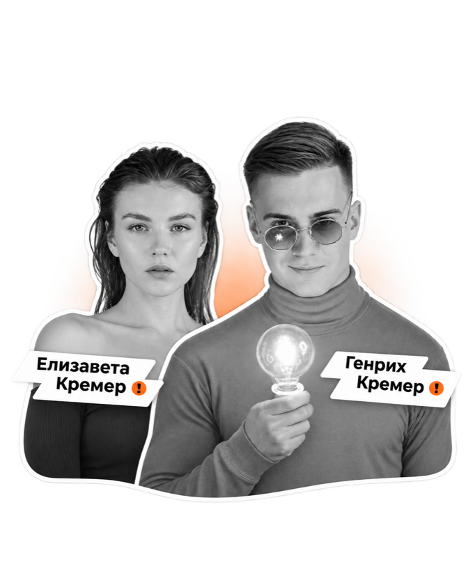
Стратегия
Reels
выбери свою
Ведущая стратегия, форматы и темы для роликов — за один эфир
Поставь плюс
в чат
Напиши,
откуда ты
Сочи?
Батуми?
Три стратсессии
Цель: ради чего ведёшь блог и к каким цифрам идёшь
Стратегия: что снимать, в каком формате и где брать темы
Монетизация: что ты продаёшь и как
Твоя цель
Что ты унесёшь
с эфира
Одну ведущую стратегию для своего блога
Как снимать и три подачи для роликов
Где брать темы и как собрать сценарий
Кто мы
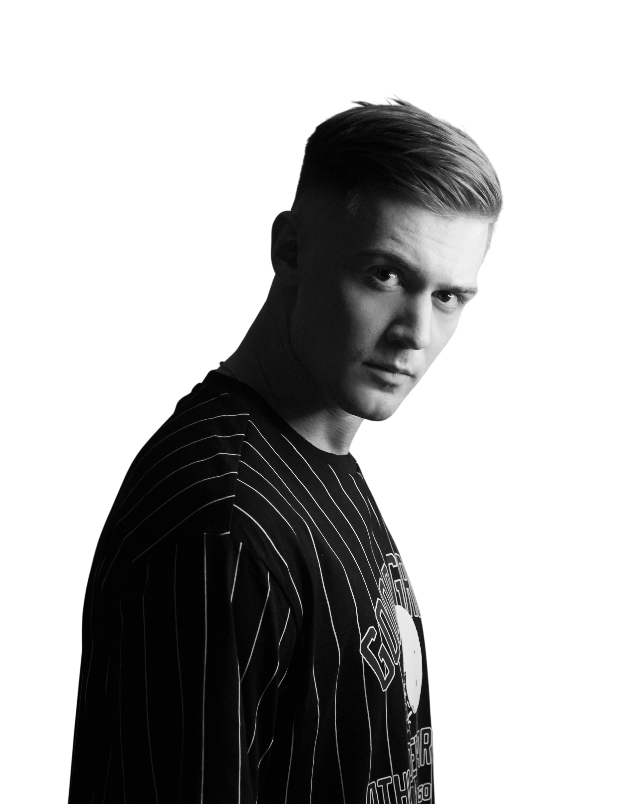
подписчиков в Instagram
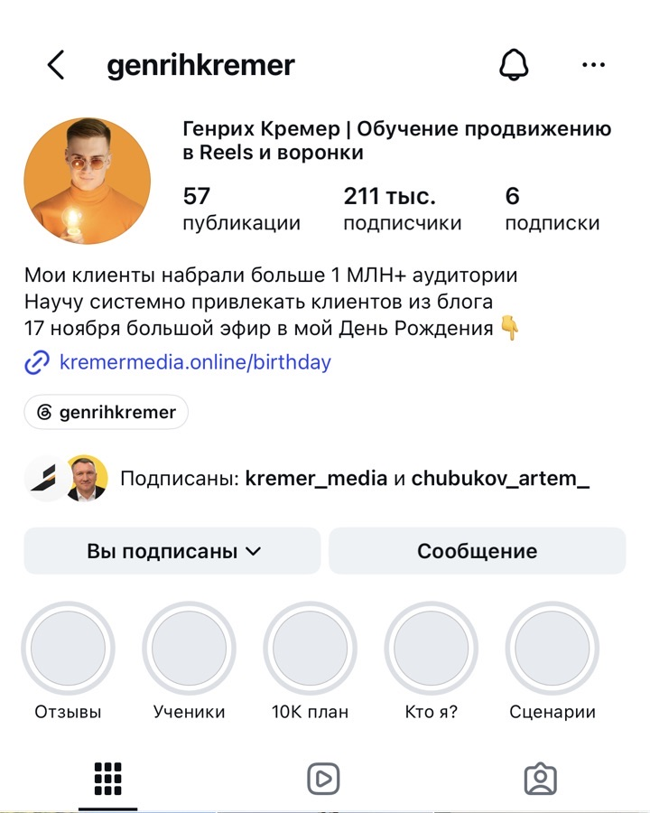

подписчиков в Instagram
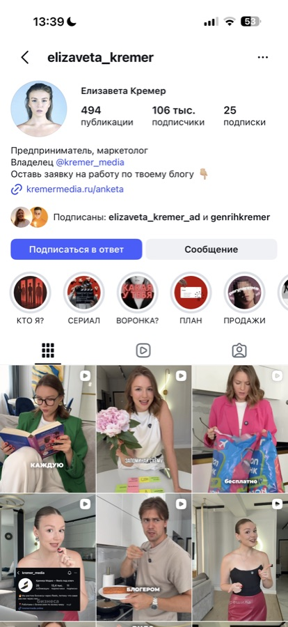
подписчиков на старте
просмотров на ролик
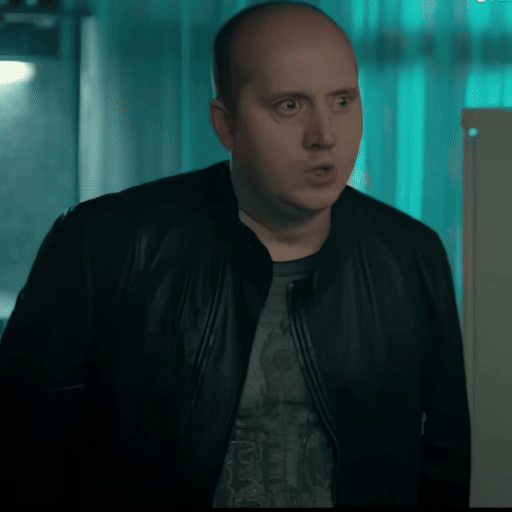
Мы нашли
систему
Ролики стали набирать просмотры и приводить клиентов


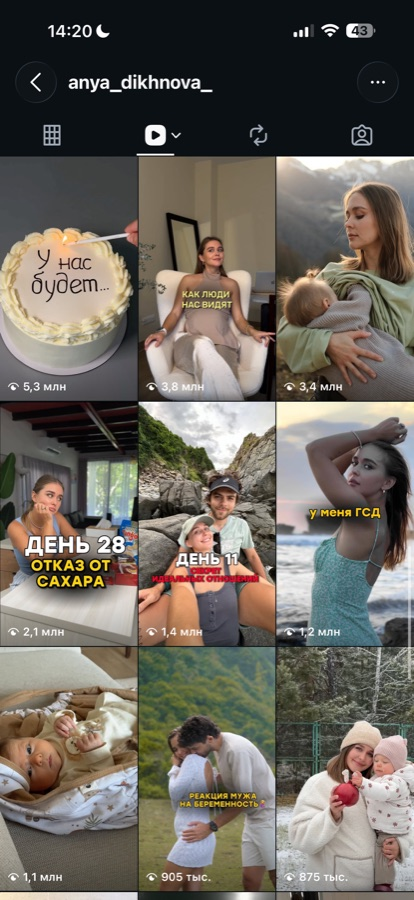

на одном ролике
подписчиков набрали наши ученики · ≈300 кейсов


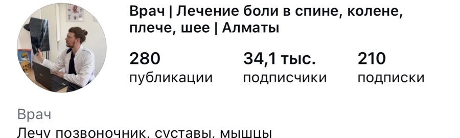
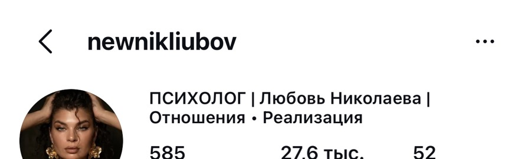

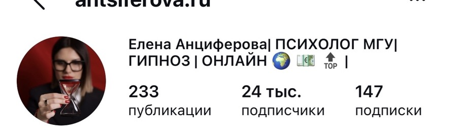
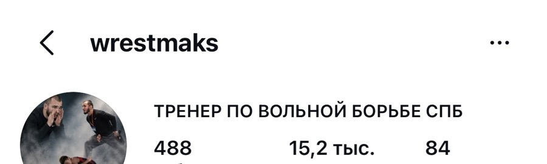
Максим
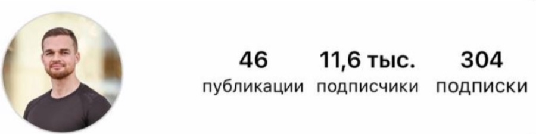
Аня
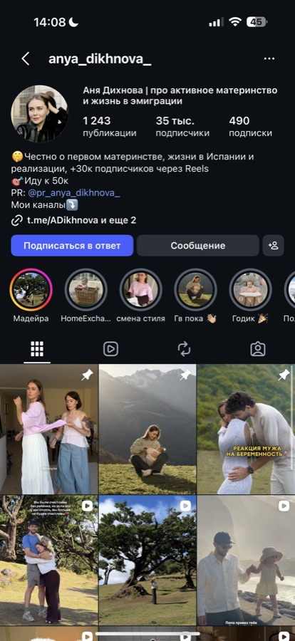
Вадим
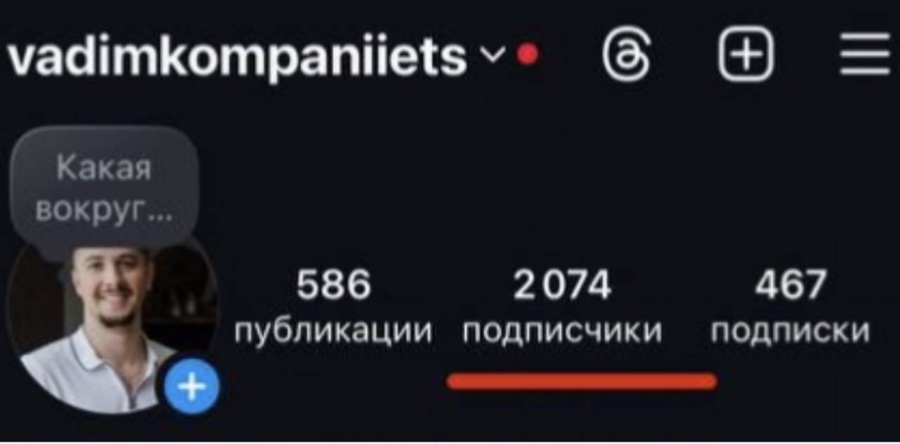
Что у них общего?
Каждый выбрал
одну ведущую стратегию
Что мешает
расти
Что ты снимаешь?
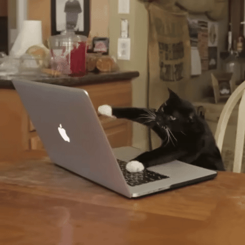
«Не понимаю, что снимать»
из исследования аудитории
«Снимаю ролики, но они набирают 200–500 просмотров»
из исследования аудитории
«Подписчики есть, а заявок нет»
из исследования аудитории
«Пока использовала две стратегии, но результата никакого. Возможно, причина — не мой формат»
из исследования аудитории
Узнаёшь себя?
- 01Экспертное, личное и продающее — вперемешку
- 02Каждую тему придумываешь с нуля
- 03Подписываются случайные люди, а не клиенты
- 04Непонятно, какие форматы работают в твоей нише
Главная ошибка
Снимать всё
подряд
Зритель не понимает, зачем на тебя подписываться
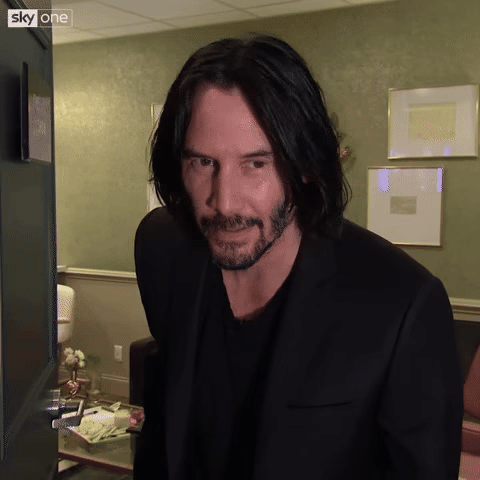
Сначала стратегия,
потом инструменты
Твоя
точка А
Возьми ручку
или открой заметки
Какая у тебя цель
на месяц?
та, что ты поставил вчера
Кто твой зритель?
Опиши одного человека: кто он и что у него болит
Что тебе комфортно показывать?
Объяснять, показывать, решать задачи
Профессия и я сам: характер, путь, выбор
Жизнь, решения, ценности, истории
Пиши.
Мы подождём
Что выбрал?
Три
стратегии
Три дороги
Дорога 1
Эксперт
Контент раскрывает твои знания и помогает решить конкретную проблему
«Какую задачу я умею решать — и как показать это в коротком видео?»
Самый быстрый способ
привлечь клиентов из блога
Эксперт: 5 шагов
- 01Выбрать одну нишу
- 02Найти вопросы, которые уже волнуют клиентов
- 03Собрать 100 идей для Reels
- 04Добавить кодовое слово и воронку — завтра
- 05Отбирать клиентов на диагностике — завтра
Один блог —
одно обещание
Ниша не должна
быть уникальной
- ✓в ней уже есть конкуренты
- ✓люди знают о своей проблеме
- ✓по теме снимают популярные Reels
конкуренция = в нише есть деньги
Вопросы клиентов
- ?«Почему у меня не получается?»
- ?«Как выбрать?»
- ?«Что делать, если…?»
- ?«Можно ли без…?»
уже задают
Нашла темы в вопросах
- 01как подбирать вещи по цветам
- 02как сочетать недорогую одежду
- 03как выглядеть стильно без больших затрат
909 → 54 тыс. подписчиков

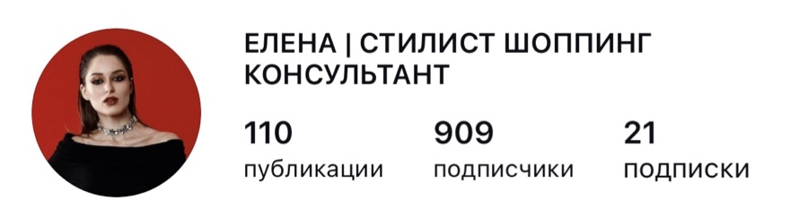
вопросов
подач
идей для Reels
Помнишь Максима?
Не «похудение»,
а осанка
Узкая тема — и один из первых роликов набрал около 1 млн
Дорога 2
Медийный эксперт
Экспертность + личность: тебя запоминают и как специалиста, и как человека
«Как сделать, чтобы запомнили и мою компетенцию, и меня?»
Медийный эксперт: 5 шагов
- 01Идея блога, за которой хочется следить
- 02Узнаваемый образ автора
- 03Сериальность: рубрики и одна сюжетная линия
- 04Превращаем жизнь в Reels
- 05Экосистема продуктов — завтра
Идея блога — путь,
за которым хочется следить
«Стать звездой
за год»
Жизнь превратилась в понятную идею блога
Ролики на миллионы · +30 тыс. подписчиков
Сильнее всего запоминается
контраст
+ заботливый отец
+ простой человек
+ самоирония
Колесо блога
Оцени каждую сферу от 1 до 10
Главная сюжетная линия: за ней интересно следить
Авторитет и желаемый образ жизни
Поддерживающие рубрики
Событие → формат
Одна жизнь —
несколько форматов
- 7 млнздоровье — разбор
- 6,6личная история — влог
- 5 млн«День №176»
Регина
Дорога 3
Личный бренд
Твоя жизнь, решения и ценности приводят людей к твоему делу
«Какие мои истории помогают понять, кто я и чем могу быть полезен?»
Личный бренд: 4 шага
- 01Уникальная идея блога
- 02Постоянные рубрики
- 03Комфортный формат, который не съедает время
- 04Сценарии по готовым шаблонам
Рубрики вместо хаоса
Помнишь Вадима?
Показывал,
как растёт компания
Пришли и партнёры в бизнес, и ученики
Ролики на 3–7 млн просмотров
Тот же формат —
другие темы
просмотров на 5-секундный ролик
Стратегии можно сочетать.
Ведущая — одна
Как выбрать
- 01Какой результат нужен от блога?
- 02Что интересно твоей аудитории?
- 03О чём ты сможешь рассказывать регулярно?
- 04Сколько у тебя времени на съёмки?
- 05Насколько комфортно показывать себя?
Подсказка
Нужны клиенты как можно быстрее
Хочешь узнаваемость и влияние
Людям интересны твоя жизнь и взгляды
Твоя ведущая?
Форматы
Формат — это подача.
Тема — кого ты привлечёшь.
Два слоя
Как снимать: способ съёмки, который тебе удобен
Как подавать: подачи под твою стратегию
4 способа снимать

Закадровый голос
- 1,5секунды — и новый кадр
- 01первым ставим самый яркий кадр
- Аачитаемые субтитры, без пауз
для инструкций, объяснений и историй
Сценка
Ситуация → проблема → конфликт → решение → финал
Наталья снимала сценки с сотрудниками в своей чебуречной: ролики до 1,5 млн
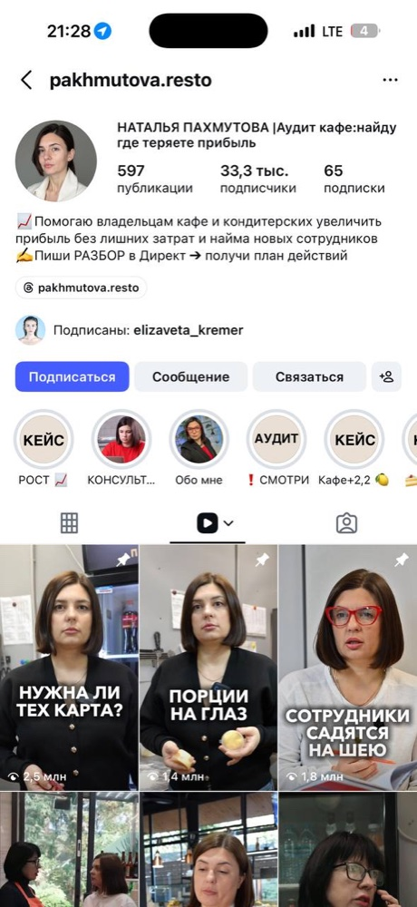
Короткое видео
5–6 секунд + цепляющий заголовок + польза в описании
Любовь: ролики на 6–10 млн просмотров
Видео в моменте
Сценарий заранее — снимаем как живую ситуацию, 12–15 секунд
Тренер по борьбе снимал прямо на тренировках — и набрал 4 группы

Твой способ, если:
- ✓мне комфортно так сниматься
- ✓есть нужные люди, места и время
- ✓подходит большинству моих тем
- ✓сниму 10 роликов, не меняя систему
- ✓раскрывает меня или мою экспертность
Как будешь снимать?
Подача:
3 из 10
10 подач
Один тест —
2,2 млн
При 700 подписчиках · 300+ мест на консультации
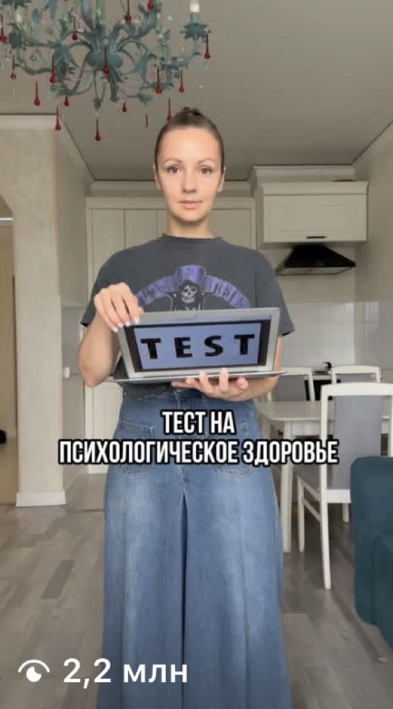
10 подач
Не всё сразу.
Начни с трёх

Твои три подачи?
Темы
и сценарий
Сколько думаешь?

Темы

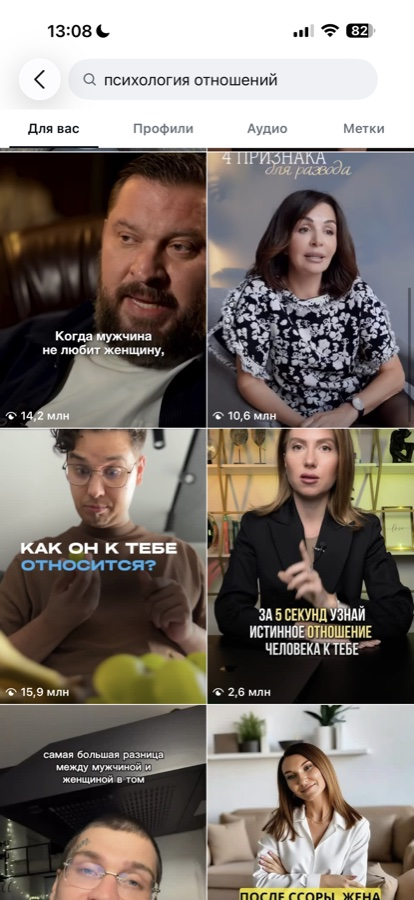
Где брать темы
YouTube по просмотрам
- 01Впиши свою тему: «осанка», «стиль», «продажи»
- 02Фильтр — «по количеству просмотров»
- 03Заголовки от 1 млн — твои темы
Не копируй. Пойми:
- 01какой вопрос вызывает интерес
- 02какая формулировка цепляет
- 03какую проблему люди узнают в себе
- 04чем активно делятся
Тема подходит, если:
- ✓у неё есть подтверждённый интерес: просмотры, сохранения
- ✓понятна боль, которую узнает твой зритель
- ✓тебе есть что сказать по-своему
- ✓она ведёт к тому, что ты делаешь
Сценарий: 4 части
внимание → узнавание → польза → действие
6 правил текста
Каждая фраза
двигает ролик вперёд?
Разбор
в эфире
Кто смелый?
Разбираем
Твой
выбор
Выбираешь идеально —
не выбираешь никак.
Выбери на месяц. Потом проверим по цифрам
Твоя очередь
напиши в чат
Пиши.
Мы подождём
Это твоя стратегия
на месяц
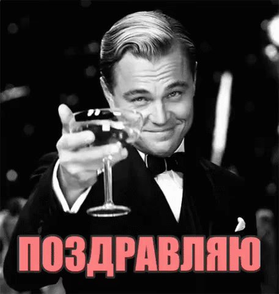
Наш опыт
«Идеальный
год жизни»
подписчиков на этой идее
«Строим
дом мечты»
Новый этап жизни — новая идея блога
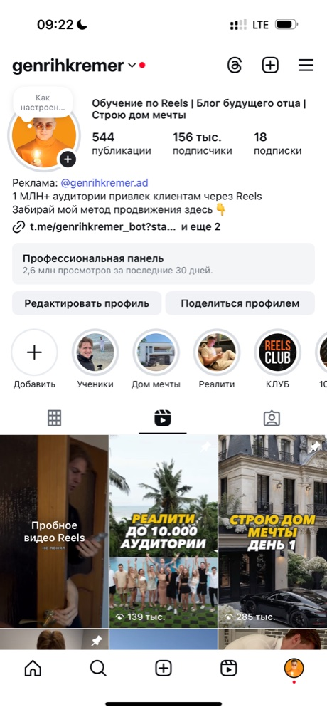
Как менялась стратегия
Стратегия меняется вместе с тобой.
Сейчас — выбери одну
Домашка
для Reels по своей стратегии
по шаблону из материалов обучения
Отправь в Telegram-чат
10 тем + 5 сценариев
Что дальше
Цель: к каким цифрам идёшь
Стратегия: что и как снимать
Монетизация: что продаёшь и как
Вопросы по программе?
Напиши своему сервис-менеджеру


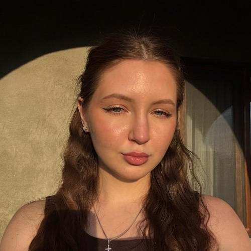
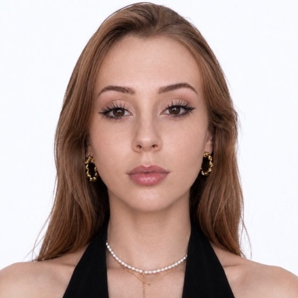


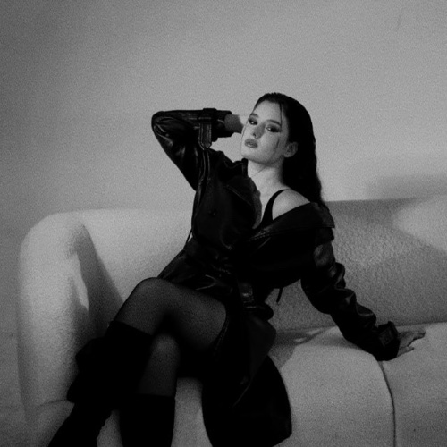
Наша цель на год
Хотим, чтобы каждый из вас стал одним из них